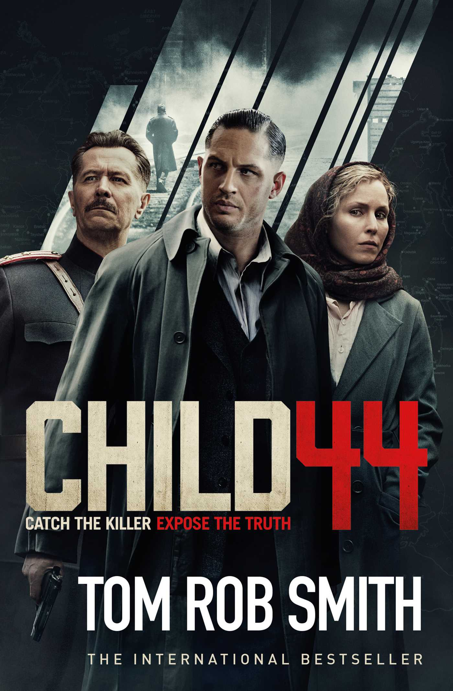

Set in the Soviet Union in 1953, Child 44 by Tom Rob Smith is a work of crime fiction that explores the life of one man as he stands up to a corrupt government. Here, in a re-created Stalinist Russia, MGB (Ministry for State Security) agent Leo Demidov is a loyal member of the State. Leo is a decorated war hero and a true believer in the ideologies of the Communist Party. In exchange for security, rations, shelter, and comfort, Leo puts his personal feelings and morals aside when carrying out missions for the State. Leo is often sent on missions to “take care of” those suspected of treason. Even as men beg for their lives under the threat of imminent death, Leo carries out the orders of his government. When children begin turning up dead, Leo looks the other way. But one day Leo is asked to arrest a man he knows is innocent. And then he is asked to arrest his own wife, Raisa. Conflicted, Leo flees with his wife and becomes an enemy of the State. While on the run, Leo can no longer ignore his conscience when he realizes that a child murderer is on the loose and the government cannot—or will not—admit the truth. Even though the children are found with identical carvings on their bodies, the State attempts to make their deaths appear coincidental. When the parents of these children try to get answers, they are silenced. Leo begins to seek details about the child murders while trying to avoid being captured by the very men he used to command. As Leo pieces together the clues surrounding the murders, he discovers that the killer is closer than anyone would have thought: his younger brother Andrei, who wants so badly to be reunited with Leo, is responsible for the murders. With the help of other men who trust him, Leo corners his brother and kills him. In the end, Leo and his wife attempt to make amends for Leo's past crimes and involvement in the MGB by adopting the two daughters of a couple murdered by Leo's former officers. Child 44 was long listed for the Man Booker Prize in 2008, and it won the Waverton Good Read Award in 2009, a high honor for a debut novel. The Secret Speech, the sequel to Child 44, was published a year later in 2009. The third novel in the trilogy, A New World, is scheduled for publication in 2012.
Child 44
